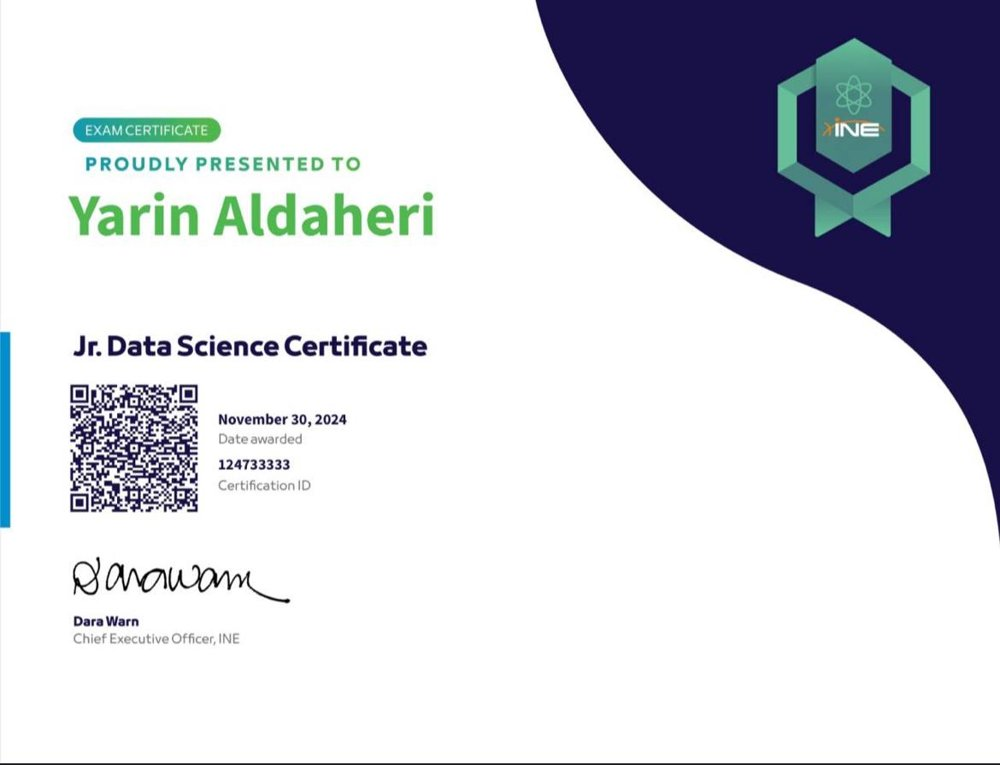
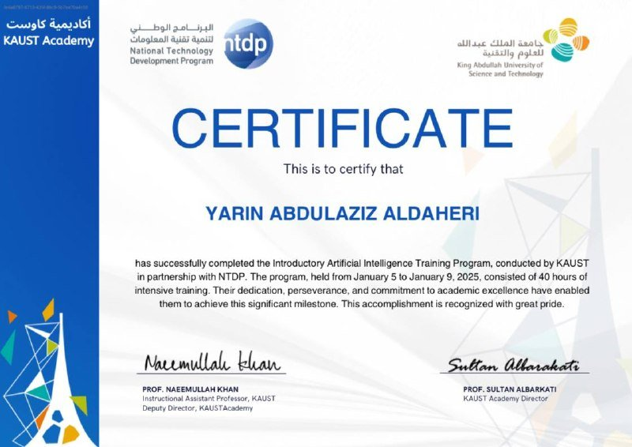
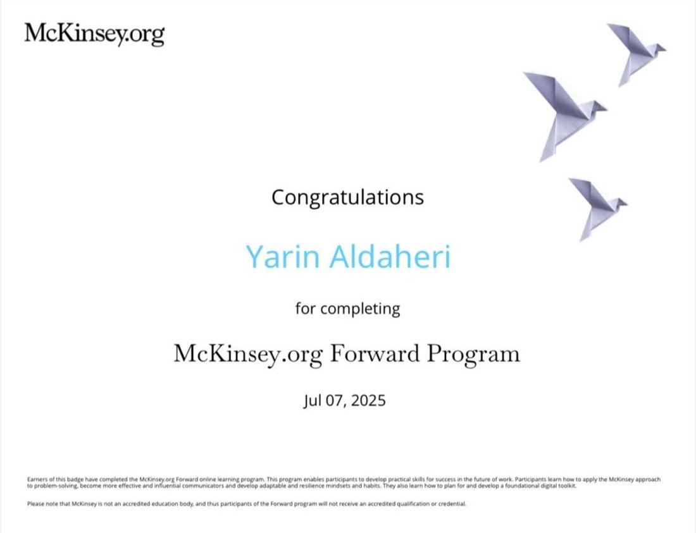
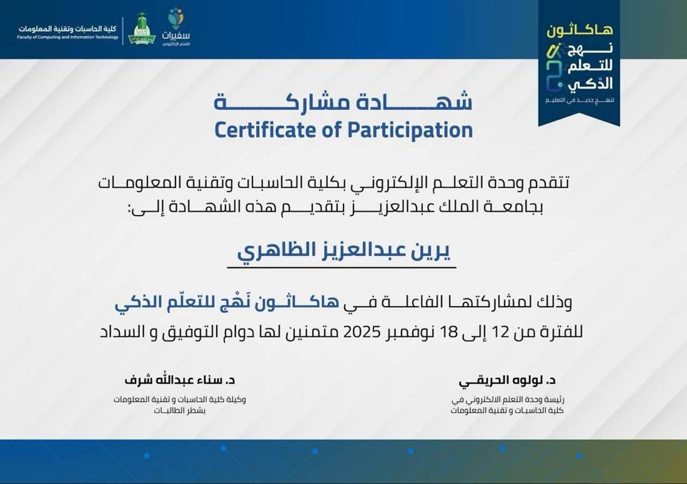
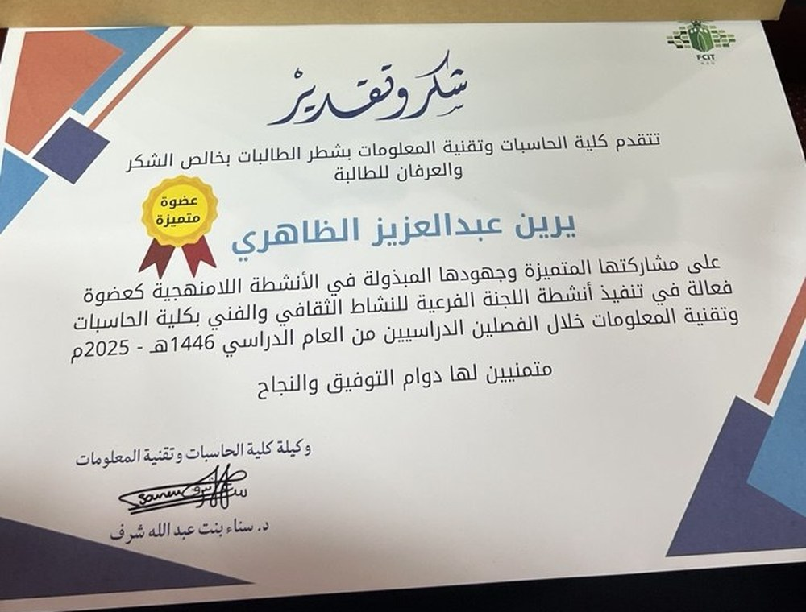

Jr. Data Science Certificate
INE & Saudi Digital Academy · 2024
Python (Pandas, NumPy, Matplotlib) for cleaning and exploring data, and statistics.
Curriculum Vitae
My education, skills, experience and certificates.
Information Technology Student | Data & AI
Information Technology student interested in data analysis and artificial intelligence. I worked with real datasets, cleaned data and built dashboards using Python and Power BI.
Bachelor of Information Technology
King Abdulaziz University, Jeddah
2022 - Present
IT Summer Co-op Trainee - Jeddah Airports Company (JEDCO)
Summer 2026 · 200+ hours
IT Governance, User Support, Power BI, Network & Cybersecurity
Documentation team leader and event photographer in the Cultural & Artistic Committee at FCIT.
Certificates

INE & Saudi Digital Academy · 2024
Python (Pandas, NumPy, Matplotlib) for cleaning and exploring data, and statistics.

KAUST Academy · 2025
40 hours about machine learning, neural networks and deep learning with PyTorch.

McKinsey.org · 2025
Structured problem solving, communication and digital tools.

FCIT, KAU · 2025
Our team built Industry Bridge, an AI platform for career readiness.

Cultural & Artistic Committee, FCIT · 2025
For leading the Documentation team and taking photos of the events.